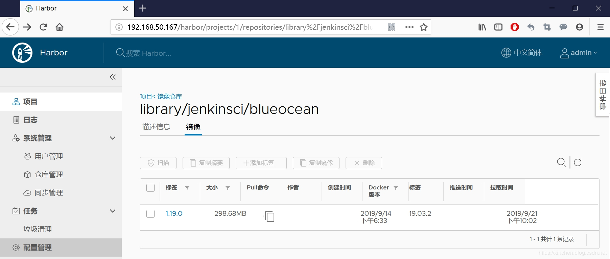

原文出处:本文由博客园博主zq2599提供。
原文连接:https://www.cnblogs.com/bolingcavalry/p/11565901.html
原文连接:https://www.cnblogs.com/bolingcavalry/p/11565901.html
关于Harbor
Harbor是用于存储和分发Docker镜像的镜像仓库服务，相比Docker Registry，Harbor在安全、标识、管理等方面做了增强，更适合企业使用；
- 官方网站：https://goharbor.io/
官方开源：https://github.com/goharbor/harbor
环境信息
今天要部署的Harbor版本是1.9.0，本次部署用的机器信息如下：- 操作系统：CentOS Linux release 7.7.1908
- Docker：19.03.2
docker-compose：1.23.2
部署Harbor
Harbor官方提供了在线和离线两种安装方式，考虑到企业服务器有可能无法访问外网，因此选择离线安装更加实用；- 打开Harbor的GitHub仓库的release页面下载离线安装包，地址是：https://github.com/goharbor/harbor/releases ，如下图红框所示，我选择了最新版的1.9.0：

- 将离线安装包harbor-offline-installer-v1.9.0.tgz下载到电脑上，执行以下命令解压：
tar -zxvf harbor-offline-installer-v1.9.0.tgz解压的结果是个名为harbor的文件夹，进入该文件夹；
- 修改配置文件harbor.yml，主要是修改以下两个配置：
a. hostname：填写本机的IP地址或者hostname，如果已经和域名绑定了也可以填域名；
b. harbor_admin_password：管理员初始密码；
更多配置例如https、存储等，请参考官方文档按需设置；
- 开始安装，在install.sh文件所在目录执行命令./install.sh即可安装Harbor，部署成功的控制台信息如下：
Creating network "harbor_harbor" with the default driver
Creating harbor-log ... done
Creating registryctl ... done
Creating registry ... done
Creating harbor-db ... done
Creating redis ... done
Creating harbor-portal ... done
Creating harbor-core ... done
Creating nginx ... done
Creating harbor-jobservice ... done
✔ ----Harbor has been installed and started successfully.----
Now you should be able to visit the admin portal at http://192.168.50.167.
For more details, please visit https://github.com/goharbor/harbor .- 此时应该有九个容器正常运行：
[root@vostro ~]# docker ps
CONTAINER ID IMAGE COMMAND CREATED STATUS PORTS NAMES
dac02ab21a1f goharbor/harbor-jobservice:v1.9.0 "/harbor/harbor_jobs…" 3 hours ago Up 3 hours (healthy) harbor-jobservice
998fa5676a08 goharbor/nginx-photon:v1.9.0 "nginx -g 'daemon of…" 3 hours ago Up 3 hours (healthy) 0.0.0.0:80->8080/tcp nginx
bc87d9a5a7f7 goharbor/harbor-core:v1.9.0 "/harbor/harbor_core" 3 hours ago Up 3 hours (healthy) harbor-core
ce495560ef35 goharbor/harbor-db:v1.9.0 "/docker-entrypoint.…" 3 hours ago Up 3 hours (healthy) 5432/tcp harbor-db
25a13fddd607 goharbor/harbor-portal:v1.9.0 "nginx -g 'daemon of…" 3 hours ago Up 3 hours (healthy) 8080/tcp harbor-portal
b9f72d4da022 goharbor/redis-photon:v1.9.0 "redis-server /etc/r…" 3 hours ago Up 3 hours (healthy) 6379/tcp redis
3804003153ae goharbor/harbor-registryctl:v1.9.0 "/harbor/start.sh" 3 hours ago Up 3 hours (healthy) registryctl
d8d570e88874 goharbor/registry-photon:v2.7.1-patch-2819-v1.9.0 "/entrypoint.sh /etc…" 3 hours ago Up 3 hours (healthy) 5000/tcp registry
2d940d7fd271 goharbor/harbor-log:v1.9.0 "/bin/sh -c /usr/loc…" 3 hours ago Up 3 hours (healthy) 127.0.0.1:1514->10514/tcp harbor-log- 由于Harbor的web服务使用了宿主机的80端口，所以在浏览器直接输入宿主机的IP地址即可访问Harbor的web管理页面，账号是admin，密码是前面设置的harbor_admin_password的值(默认是Harbor12345)：
- 登录成功后发现空空如也，也是，目前还没啥东西：
允许http连接
接下来我们要验证Harbor服务是否可用，验证方式是从另一台Linux电脑（下面称之为A电脑）远程推送镜像到Harbor机器；
Harbor默认是不允许http连接的，这里可以修改设置来支持http连接，以便后续的验证操作；
- 如果要从A电脑连接Harbor服务器，那么要对A电脑做设置，这里A电脑是Linux操作系统；
- 编辑A电脑的/etc/docker/daemon.json文件(如果不存在就新建)，增加以下内容，192.168.50.167是Harbor服务器的IP地址：
{
"insecure-registries":["192.168.50.167"]
}- 重启使配置生效：
systemctl daemon-reload && systemctl restart docker再次提醒：这里修改是远程连接Harbor服务的机器的配置，而不是Harbor服务器的配置；
推送镜像到Harbor
接下来验证Harbor的服务，在A电脑上尝试将本机的镜像推送到Harbor；
- 登录A电脑，选个本地镜像用来测试，我这里有个名为jenkinsci/blueocean:1.19.0的本地镜像，ID为11e2757c8bc1：
root@hedy:~# docker images
REPOSITORY TAG IMAGE ID CREATED SIZE
jenkinsci/blueocean 1.19.0 11e2757c8bc1 7 days ago 553MB- 执行以下命令，将选定的本地镜像修改名称和TAG：
docker tag 11e2757c8bc1 192.168.50.167/library/jenkinsci/blueocean:1.19.0上述命令中，192.168.50.167是安装harbor的时候，harbor.yml文件中配置的hostname的值，library是harbor默认的项目名称；
- 执行以下命令即可从A电脑登录Harbor：
docker login 192.168.50.167 -u admin -p Harbor12345- 执行命令docker push 192.168.50.167/library/jenkinsci/blueocean:1.19.0
root@hedy:~# docker push 192.168.50.167/library/jenkinsci/blueocean:1.19.0
The push refers to repository [192.168.50.167/library/jenkinsci/blueocean]
2963284ab4ce: Pushing [================================================> ] 58.27MB/60.25MB
c4a4de444fad: Pushing [========> ] 47.87MB/267.6MB
850b4f512dc8: Pushed
abdaf43f94b6: Pushed
a6a27b82134d: Pushed
d6bee87a74b8: Pushed
28c6bdb5fda9: Pushed
bb25d1c7cc8a: Pushed
e2419390abaa: Pushing [========================> ] 37.29MB/77.36MB
d6982687f77e: Pushed
c9659702491d: Pushed
ed4e100c24a1: Pushing [==========================================> ] 36.71MB/43.37MB
ceaf9e1ebef5: Pushing [======> ] 12.58MB/99.29MB
9b9b7f3d56a0: Waiting
f1b5933fe4b5: Waiting- 上传完毕，登录Harbor网页，可以看到新上传的镜像：

至此，实战完毕，在您搭建Harbor服务的时候希望本文能给您一些参考。